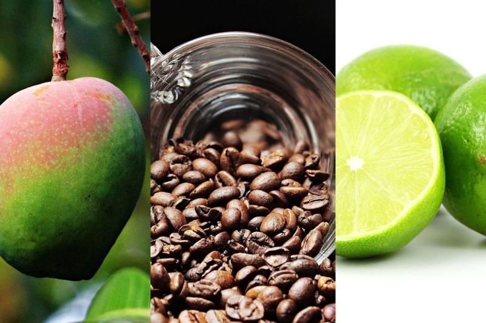

DEPARTAMENTO DE TOLIMA
MAPA DEL TOLIMA

HISTORIA DEL TOLIMA
La historia de Tolima comienza con las tribus indígenas, especialmente los pijaos, que resistieron ferozmente la conquista española. Durante la colonia, la región se desarrolló con cultivos de tabaco, algodón y caña de azúcar. Ibagué fue fundada en 1550 y se convirtió en un importante centro comercial.
Tolima jugó un papel activo en la independencia de Colombia, apoyando a las fuerzas patriotas. En el siglo XIX, se convirtió en el Estado Soberano del Tolima, pero sufrió durante conflictos como la guerra de los Mil Días y La Violencia en el siglo XX.
Actualmente, Tolima es una región agrícola clave, conocida por la producción de arroz y café, y su capital, Ibagué, es reconocida como la "Capital Musical de Colombia".
ECONOMIA DEL TOLIMA
La economía del Tolima es principalmente agrícola, con cultivos como arroz, café, maíz, algodón y frutas. El departamento es uno de los mayores productores de arroz en Colombia y tiene una importante tradición cafetera, sobre todo en las zonas montañosas.
Además de la agricultura, Tolima tiene sectores importantes en la ganadería y la pesca. En los últimos años, el sector industrial ha crecido en torno al procesamiento de alimentos y productos agrícolas.
El turismo también ha ganado relevancia, con destinos como el Cañón del Combeima y el Parque Nacional Natural Los Nevados, así como eventos culturales en Ibagué, conocida como la "Capital Musical de Colombia".
En resumen, la economía de Tolima se basa en la agricultura, con sectores en crecimiento como el turismo y la industria alimentaria.

CULTURA DEL TOLIMA
La cultura del Tolima es rica y diversa, profundamente influenciada por su historia indígena, su tradición agrícola y su pasión por la música.
Ibagué, la capital, es conocida como la "Capital Musical de Colombia", famosa por su tradición en la música clásica y folclórica. Cada año se celebra el Festival Folclórico Colombiano, que resalta las danzas tradicionales, como el sanjuanero y el bambuco, acompañadas de trajes típicos y muestras culturales.
En cuanto a la gastronomía, destacan platos como el tamal tolimense y la lechona, ambos muy representativos del departamento.
Tolima también es hogar de diversas festividades y eventos culturales, como las Ferias y Fiestas de San Juan y San Pedro, que se celebran en todo el departamento con música, desfiles y muestras folclóricas.
En resumen, la cultura del Tolima está marcada por su fuerte vínculo con la música, la gastronomía tradicional, y su orgullo por las raíces folclóricas y campesinas.
TURISMO DE TOLIMA
El turismo en Tolima es variado y atractivo, destacándose por su combinación de naturaleza, cultura y gastronomía.
Atractivos naturales incluyen el
Cañón del Combeima y el
Parque Nacional Natural Los Nevados, ideales para el ecoturismo y el senderismo.
Ibagué, la capital, es famosa como la
"Capital Musical de Colombia, con festivales como el
Festival Folclórico Colombiano y la celebración de las
Ferias de San Juan y San Pedro.
En el ámbito gastronómico, los visitantes pueden disfrutar de platos típicos como la
lechona y el
tamal tolimense.
Tolima también ofrece sitios históricos y arquitectónicos que enriquecen la experiencia turística, convirtiendo la región en un destino diverso y fascinante.